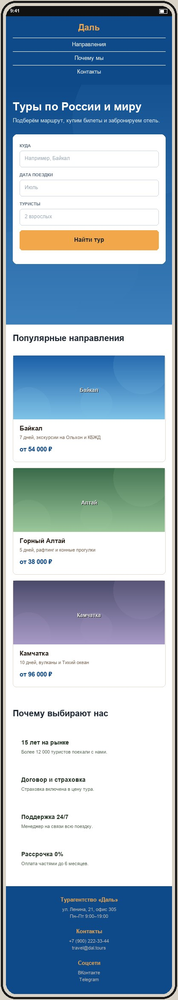

Макет мобильной версии
Файл макет-мобильный.jpg лежит в этой же папке. Сверстать нужно примерно по макету: тот же порядок блоков и общая структура, точные размеры не проверяются.

Рекомендации по мобильной версии
- Шапка. Логотип по центру, пункты меню столбиком под ним:
.header-inner { flex-direction: column }, у.nav aубрать левый отступ, задать отступ снизу. - Первый экран. Заголовок уменьшить до 30–32 px (
.hero h1), вертикальные отступы секции сократить до 60–80 px. - Форма поиска. Поля друг под другом на всю ширину:
.search { flex-direction: column; align-items: stretch }. Кнопка «Найти тур» — на всю ширину формы. - Направления. Карточки туров в один столбец:
.cards { flex-direction: column },.card { width: 100% }. - Преимущества. Четыре блока в один столбец:
.features { flex-direction: column },.feature { width: 100% }. - Подвал. Колонки столбиком по центру:
.footer-inner { flex-direction: column; text-align: center }.
Подсказка: все переопределения добавляются в конец
css/style.css внутри @media (max-width: 768px) { ... }. Форма поиска — главный элемент этого варианта: на десктопе она в одну строку, на телефоне каждое поле занимает отдельную строку.
Проверка
- DevTools → Toggle device toolbar (Ctrl+Shift+M), ширина 375 px.
- Горизонтальной прокрутки нет.
- Порядок блоков совпадает с макетом: шапка → первый экран с формой → направления → преимущества → подвал.